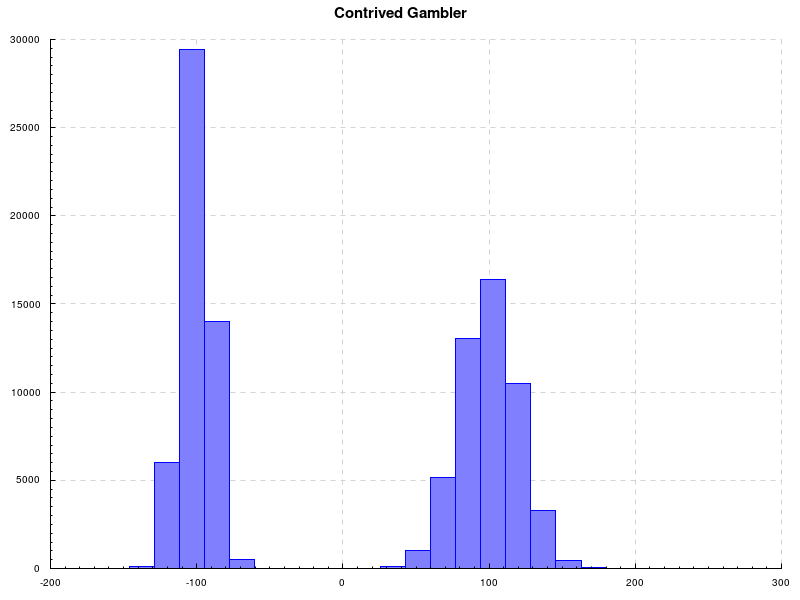

A Monad for Probabilistic Computations
Haskell
What we want to do
We want a monad so that we may compose probabilistic computations.
We also want to be able to use Haskell’s do-notation to intuitively describe the act of sampling from a probability distribution.
Essentially, we want to write code that looks like the following:
fairCoin = binomial 0.5
shadyGambler b = if b then discrete [(100, 0.9), ((-100), 0.1)]
else certain (-100)Note: Type annotations left out for suspense. And to not mislead the innocent.
Which represents the following:
We have a fair coin where the event of getting a heads (corresponding to True) has a Bernoulli distribution which assigns 0.5 to the event of getting True.
We also have a shady gambler that you can play against. If you toss a coin, and it lands on tails, you lose 100. If it lands on heads you win 100! But when the coin lands on heads, 10% of the time, the shady gambler runs away with your money: basically a distribution over Doubles.
Now we would like to produce samples after composing probabilistic functions. We would like to first sample a Boolean from our fairCoin, then pass it as a parameter to our shadyGambler. In order to do this, we would like to write code that looks like this:
Now, we can sample from this distribution and obtain results that we can then use for whatever purpose.
This example isn’t very impressive; you could work out the resulting distribution on pencil and paper quite easily. But using this monad we can work our way up to describing much more complex probabilistic computations!
For example, let’s say that the amount of rain tomorrow is normally distributed and is conditioned on the amount of rain today.
We can write it like this:
rainTomorrow d = if d <= 0 then normal 1.0 0.3
else if d < 5 then normal 3 0.3
else if d >= 5 then normal 2 0.3This says that if we get no rain today, then tomorrow we expect 1 inch of rain, normally distributed with standard deviation 0.3.
If we get less than 5 inches of rain today, then tomorrow we expect 3 inches of rain, normally distributed with standard deviation 0.3.
If we get more than or equal to 5 inches of rain today, then tomorrow we expect 2 inches of rain, normally distributed with standard deviation 0.3.
I am not a meteorologist.
This conditional probability distribution allows us to now describe future events as a a function of current observations.
But let’s say we want to produce a probabilistic function that takes current rain levels and describes how much rain we should expect 3 days from now.
Or alternatively:
This would be super nice to have! Now if we have no rain today, we’ll have a Distribution datatype from which we can draw samples.
Let’s get to work!
What we need to do in order to do what we want to do
Okay, type annotations starting from now.
First things first: we need a datatype to represent probability distributions.
data Distribution a where
Normal :: Mean -> StDev -> Distribution Double
Bernoulli :: Double -> Distribution Bool
Discrete :: [(a, Double)] -> Distribution a
Uniform :: [a] -> Distribution a
Certain :: a -> Distribution aWe use GADTs to constrain the types of values that we can sample from normal distributions and Bernoulli distributions.
Cool! Now we need to be able to sample from these distributions. We define a typeclass called Sampleable that describes things from which we can draw samples.
sampleFrom should take a “Sampleable” thing over values of type a, plus a random number generator, and returns a value of type a along with a new random number generator.
certainDist should take a value and return a “Sampleable” thing that always returns the original value. This is useful because we want to make a monad, and we need to keep our monad instance as general as possible to be good little functional programmers.
Now we just have to make Distribution an instance of Sampleable.
I’ve left this implementation out since it’s a bit long and we have a long way to go.
Cool! Now we have things that we can sample from and a way to sample from these things! We just need to make a monad that lets us Do What We Would Like To Do.
First of all, we need to bake a random number generator into our monad so that when we have composed distributions, we can sample from the first one with the RNG, then pass the newly created one along to the next distribution.
We thus consider our monad as a function that takes a random number generator and produces a distribution. This way, we are free to create any random number generator we want outside of the monad and use it to produce our samples.
The typeclass RandomGen is used to keep things nice and general, so that any random number generator can be used.
Now, the monad instance.
instance (RandomGen g, Sampleable d) => Monad (Sample g d) where
return x = Sample $ \g -> (certainDist x, snd $ next g)
(>>=) ma f = Sample $ \g ->
let (dist, g') = runSample ma g
(a, g'') = sampleFrom dist g'
in runSample (f a) g''return x simply creates a function that takes a random number generator and returns a tuple containing a distribution that always returns x and the next random number generator.
ma >>= f is a bit more complicated. Essentially, bind constructs a function that samples from the left-hand side ‘Sample’ and passes the sampled value to the right-hand side function, while making sure that we always pass along new random number generators.
Now we can use do-notation to make super intuitive samples! We just need a way to produce samples from the resulting ‘Sample g d a’ type. This turns out to be pretty easy.
sample :: (RandomGen g, Sampleable d) => Sample g d a -> g -> (a, g)
sample s g = let (dist, g') = runSample s g
(a, g'') = sampleFrom dist g'
in (a, snd $ next g'')Small technicality: We do an extra ‘next’ in order to get one more ‘RandomGen’ because when we sample from normal distributions, we consume one extra ‘RandomGen’ due to the Box-Muller transform.
We can then build on top of this function to do multiple samples or other cool things.
Yay! We’re done! Let’s give our monad a test.
Testing by doing what we wanted to do after having done what we needed to do
Shady gambler
We can now run our shadyGambler test with the fair coin.
First we define a type synonym for Sample called Sampler that specializes the RandomGen and the Sampleable to StdGen and Distribution, just so that we have shorter type annotations for these tests.
type Sampler a = Sample StdGen Distribution a
fairCoin :: Sampler Bool
fairCoin = bernoulli 0.5
shadyGambler :: Bool -> Sampler Double
shadyGambler b = if b then discrete [(100, 0.9), (-100, 0.1)]
else certain (-100)
gamblerGivenCoin :: Sampler Bool -> Sampler Double
gamblerGivenCoin coin = coin >>= shadyGambler
main = do
s <- sampleION 1000000 $ gamblerGivenCoin fairCoin
let wins = S.filter (== 100) s
losses = S.filter (== (-100)) s
putStrLn $ "Wins with fair coin: " ++ (show $ length wins)
putStrLn $ "Losses with fair coin: " ++ (show $ length losses)Results:
"Wins with fair coin: 449903"
"Losses with fair coin: 550097"We expect to win 45% of the time and lose 55% of the time (try working it out on paper! It’s relatively simple with this computation.).
We confirm that our results match our expectations by testing the null hypothesis that we expect to win 45% of the time. We use the central limit theorem help us do this.
Under our null hypothesis, our number of wins takes on a normal distribution with population mean 450,000 and population variance 247,500 (0.45 x 0.55 * 1,000,000). Our population standard deviation is thus ~497.5.
Since our sample mean is 449903, which is only 97 away from our claimed population mean, we accept the null hypothesis as the sample mean z-score is only around -0.195.
Hurray!
Monty Hall
Let’s run through another test, just for fun.
We’ll now create a Sample for the classic Monty Hall problem.
First we’ll need to define some types.
Cool! As we know very well, the Monty Hall problem starts off with 3 doors, where 2 have goats behind them and 1 has a car behind it.
Oh, and we’re interested in getting the car.
We first pick a door, and then out of the other doors the announcer reveals a Goat. We then have a decision to make: do we switch doors or stay with the one that we originally chose? Kevin Spacey (and probability theory) says switch.
But because we’re sharp of wit and aware of Kevin Spacey’s tricks, we intelligently choose to simulate our fate if we decide to listen to him.
montyHall :: Sampler Prize
montyHall = do
firstPick <- doorInit
let remainingDoors = removeDoor firstPick doorInit
removeDoor Goat remainingDoorsCool! We pick from the initial set of doors, then out of the remaining doors the announcer reveals a goat (effectively removing that door from our decision making process because, ew, goats), and then we pick the remaining door. (i.e. switch doors)
Let’s run this simulation a hundred thousand times and see what we get!
main = do
gen <- newStdGen
let a = sampleN 100000 montyHall gen
a' = S.filter (== Car) a
a'' = S.filter (== Goat) a
putStrLn $ "Number of cars won: " ++ (show $ length a')
putStrLn $ "Number of goats won: " ++ (show $ length a'')
Number of cars won: 66659
Number of goats won: 33341We could test if our sample mean is significantly different from the expected win rate of 2/3, but the test data should be adequately convincing. It seems that we can trust Kevin Spacey (for now).
Swindler’s Dice
Going along with our theme of gambling, we now describe another probability riddle: Swindler’s Dice.
A swindler says: “If you roll a 1 on this die, you get double your money! If not, you lose.”
A fool says: “But that’s only 1 out of 6 odds…”
A swindler says: “Yes, but I’ll let you roll 3 times to get a 1.”
Are the odds fair? Let’s see!
swindler :: Int -> Bool
swindler i = i == 1
die :: Sampler Int
die = uniform [1, 2, 3, 4, 5, 6]
swindlersDice :: Sampler Bool
swindlersDice = do
s1 <- die
s2 <- die
s3 <- die
return (swindler s1 || swindler s2 || swindler s3)And after running it:
Number of wins: 42071
Number of losses: 57929The expected win rate is about 42%. We obtain this by taking 1 - (5/6)^3, as there is only one way to lose, and it’s to not get one on all 3 dice.
Our results are quite close to the expected win rate! This is not a fair game! Huzzah!
Statistically sophisticated gambler
For our final trick, we’ll toss around some different probability distributions to demonstrate how we can sample from some more complex probabilitic computations.
With a super duper contrived example.
Let us recapitulate to our good friend, the shady gambler. He’s since then ceased his shady ways and now resorts to using probability to dazzle and bewilder unwitting victims.
His latest proposal is this: if you get heads on a coin flip, then you win an amount of money normally distributed with mean 100 and standard deviation 20. If you get tails, then you lose an amount of money normally distributed with mean -100 and standard deviation 10.
So basically your typical neighbourhood thug.
contrivedGambler :: Bool -> Sampler Double
contrivedGambler b = if b
then normal 100 20
else normal (-100) 10We’ll continue using our fair coin because we’re honest gambling addicts.
fairCoin :: Sampler Bool
fairCoin = bernoulli 0.5
gamblerWithCoin :: Sampler Double
gamblerWithCoin = fairCoin >>= contrivedGambler
main = do
gen <- newStdGen
let winnings = sampleN 100000 gamblerWithCoin gen
renderableToFile def "contrived.png" $ toRenderable $ histogram $ toList winningsLet’s see how our winnings are distributed!

Dude that’s pretty cool.
Conclusion
So here we are, at the end of a very long blog post. I hope this helps anyone who wanted something like this, to very nicely write and sample from arbitrary probability distributions. This post, however, doesn’t cover the stochastic process part of the stochastic package, which is also pretty fun to play with. That will have to be for another post! I’ll also put up some profiling reports with some of the larger computations that we’ll run.
Disclaimer: I’m no statistician, nor am I a genius category theorist, so if you find any mistakes/bugs/optimizations, please submit a pull request! There is also a super informal list of items to do in my repo, which aren’t in any particular order. Also feel free to get in touch via email; if you have anything to teach me I would be happy to listen.